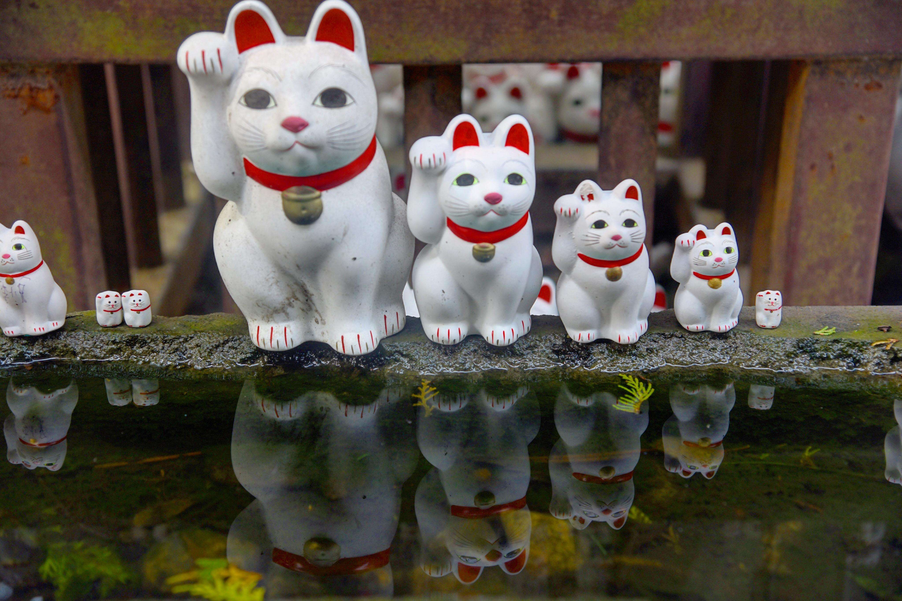

富士山是日本最高峰，别人多说去日本不去富士山就等于没去,因为富士山是日本文化的象征，横跨静冈县和山梨县的休眠火山。由于海拔的原因，不同的高度，富士山会有不同的景观特色。

位于东京的豪德寺（Gotokuji Temple）据说是招财猫的发源地之一。传说在江户时代，某天一位藩主路过豪德寺时，寺庙里和尚养的猫刚好摆出招人来的手势，于是藩主决定在寺庙稍作休息。没想到这个偶然，让藩主躲过了接下来的大雷雨。为了感谢这只猫，他决定捐赠大笔金钱，让豪德寺得以修缮日渐老旧的寺庙建筑。
秋名山是日本群马县的上毛三山之一，实名榛名山，是由妙义、赤城、上毛山组成的一座双重式火山，尤其以四个惊险而陡峭的五连发夹弯出名，五连发夹弯还是《头文字D》里面的重要场景之一，这里也是车神（藤原拓海）的发迹地。
烟火大会：日本传统文化活动，自江户时代开始兴起，是日本夏日庙会活动之一。在日本素有春季欣赏樱花而夏季观看烟火的传统。观看烟火大会时，一般穿着日本传统的浴衣。相对一般和服的昂贵和复杂，浴衣简单而色彩清丽。